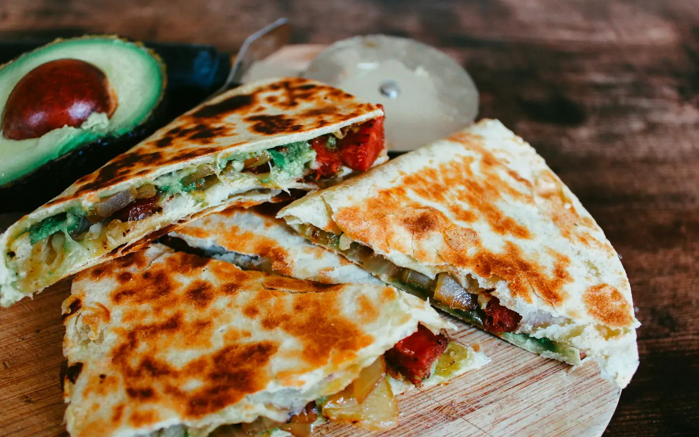
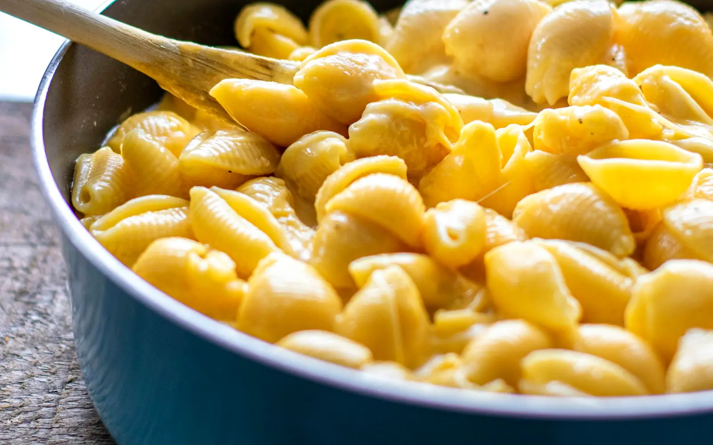

6 recipes
North American Cuisine
Tacos, chili and maple mornings

 MexicoChickpea TacosMasaledar chane aur nimbu ke saath naram tortilla.MexicoGuacamoleNimbu aur dhaniye wali malaidar avocado dip.
MexicoChickpea TacosMasaledar chane aur nimbu ke saath naram tortilla.MexicoGuacamoleNimbu aur dhaniye wali malaidar avocado dip.
MexicoCheese QuesadillaPighle cheese aur shimla mirch wale sunehre tortilla.
United StatesMac and CheeseMalaidar gaadhi cheese sauce mein macaroni. United StatesThree Bean ChiliPoori tarah rajma-beans se bani dhuandaar Texas style chili.CanadaEggless Maple PancakesSunehre maple syrup mein doobe phoole pancakes.
United StatesThree Bean ChiliPoori tarah rajma-beans se bani dhuandaar Texas style chili.CanadaEggless Maple PancakesSunehre maple syrup mein doobe phoole pancakes. MexicoChickpea Tacos25 min · Easy · Vegetarian versionWhat you needTortilla, Kabuli chana, Shimla mirch, Pyaaz, TamatarOpen recipe →
MexicoChickpea Tacos25 min · Easy · Vegetarian versionWhat you needTortilla, Kabuli chana, Shimla mirch, Pyaaz, TamatarOpen recipe → MexicoGuacamole10 min · EasyWhat you needAvocado, Nimbu, Pyaaz, Tamatar, Hari mirchOpen recipe →
MexicoGuacamole10 min · EasyWhat you needAvocado, Nimbu, Pyaaz, Tamatar, Hari mirchOpen recipe → MexicoCheese Quesadilla15 min · EasyWhat you needTortilla, Cheddar cheese, Shimla mirch, Pyaaz, Sweet cornOpen recipe →
MexicoCheese Quesadilla15 min · EasyWhat you needTortilla, Cheddar cheese, Shimla mirch, Pyaaz, Sweet cornOpen recipe → United StatesMac and Cheese25 min · EasyWhat you needMacaroni, Makkhan, Maida, Doodh, Cheddar cheeseOpen recipe →
United StatesMac and Cheese25 min · EasyWhat you needMacaroni, Makkhan, Maida, Doodh, Cheddar cheeseOpen recipe → United StatesThree Bean Chili40 min · Easy · Vegetarian versionWhat you needRajma, Black beans, Kabuli chana, Pyaaz, Shimla mirchOpen recipe →CanadaEggless Maple Pancakes20 min · Easy · Vegetarian versionWhat you needMaida, Doodh, Dahi, MakkhanOpen recipe →
United StatesThree Bean Chili40 min · Easy · Vegetarian versionWhat you needRajma, Black beans, Kabuli chana, Pyaaz, Shimla mirchOpen recipe →CanadaEggless Maple Pancakes20 min · Easy · Vegetarian versionWhat you needMaida, Doodh, Dahi, MakkhanOpen recipe →